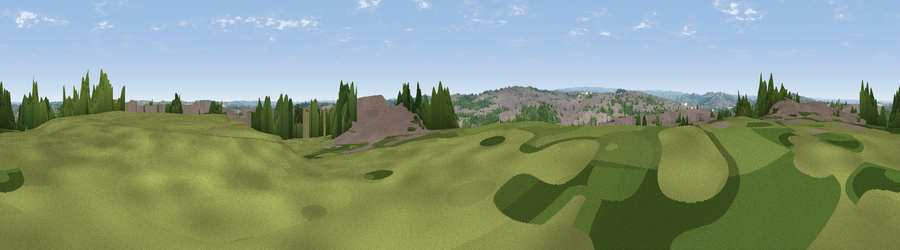

Viewpoint near Barnsley
#24486 in England · top 41% of its area beats it · near BarnsleyWhere it is
The exact computed spot (SE 35975 07825). Click the marker for map links.
The view, rendered

A 360° render of this exact spot computed from the terrain model, tree cover and land cover — summer colours, afternoon light, calibrated against photographs of famous viewpoints. Real trees, hedges and buildings will differ in detail.
The panorama
Grey silhouette: terrain skyline in each direction (720 bearings, Earth curvature and refraction included). Dashed green: skyline with trees (+15 m) and buildings (+8 m) as obstacles. Blue strip: how far the ground is visible on each bearing.
Where the view opens
Wedge length = distance to the farthest visible ground on that bearing (vegetation-aware). Rings at 10, 25 and 50 km.
What fills the view
48% built-up · 29% woodland · 15% grassland · 8% cropland
Angular shares of the visible panorama (visual magnitude), not map area. Landscape diversity 0.53 (0–1 Shannon).
Key numbers
More beautiful places nearby
The staircase of upgrades: each row has a higher view potential than everything closer. Driving times are estimates from straight-line distance, calibrated against real road routing — check an actual route before setting out.
| Place | Direction | Drive | Score |
|---|---|---|---|
| Viewpoint near Worsbrough | SSW · 3 km | ~7 min | 59.6 |
| Viewpoint near Staincross | NW · 5 km | ~10 min | 63.8 |
| Viewpoint near Woolley | NW · 6 km | ~13 min | 67.9 |
| Hoyland Lowe | S · 7 km | ~14 min | 68.7 |
| Viewpoint near Hoylandswaine | WSW · 10 km | ~20 min | 72.7 |
| Viewpoint near Green Moor | SW · 12 km | ~22 min | 73.1 |
| Viewpoint near Wharncliffe Side | SSW · 12 km | ~22 min | 75.0 |
| Viewpoint near Wharncliffe Side | SSW · 12 km | ~23 min | 75.2 |
53.56581, -1.45830 · source: screening · position refined by local search. Computed location — check access rights before visiting.